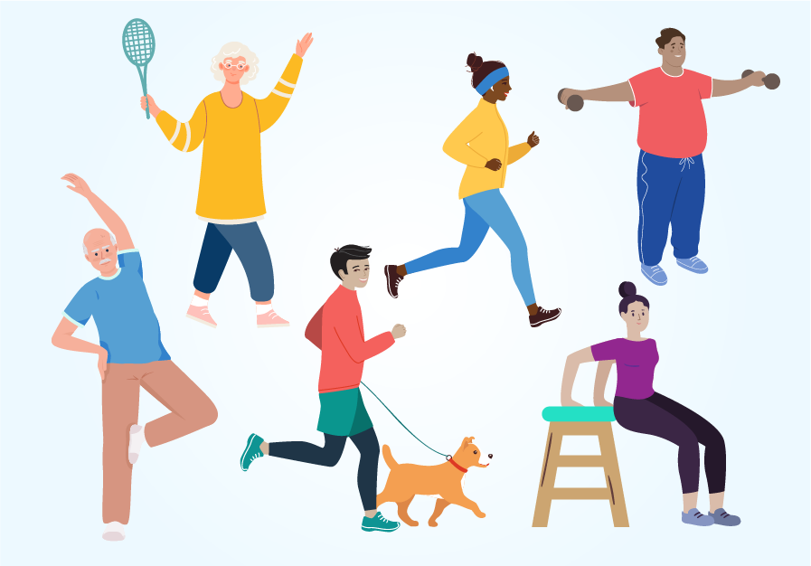

Nutrition

Practicing healthy nutrition is a conscious and empowering choice that has a profound impact on my well-being. It's a lifestyle that prioritizes the nourishment of the body with wholesome and nutrient-rich foods.
This means making mindful selections when planning meals, opting for fresh fruits and vegetables, lean proteins, whole grains, and healthy fats. Portion control is essential to maintain a balanced intake of calories, and staying hydrated with plenty of water is equally crucial.
Healthy nutrition isn't just about what we eat but also how we eat; it encourages mindful eating, savoring each bite, and listening to our body's hunger and fullness cues. By consistently practicing healthy nutrition, we support our physical health, boost our energy levels, enhance our mental clarity, and reduce the risk of chronic diseases. Ultimately, it's an investment in ourselves, fostering vitality and longevity while promoting a better quality of life.
Physical Fitness
Engaging in regular physical fitness activities is a cornerstone of maintaining good health. These activities encompass a wide range of exercises and movements that promote physical strength, flexibility, cardiovascular endurance, and overall well-being.
Activities such as brisk walking, jogging, cycling, and swimming are excellent for improving cardiovascular health and increasing stamina. Strength training exercises, like weightlifting or bodyweight exercises, help build muscle mass and bone density, contributing to a stronger, more resilient body. Yoga and stretching routines enhance flexibility, balance, and reduce the risk of injury. Group fitness classes, such as dance, aerobics, or martial arts, not only provide physical benefits but also promote social interaction and mental well-being.
Regular physical activity releases endorphins, reducing stress and anxiety while improving mood and cognitive function. In summary, incorporating a variety of physical fitness activities into our lives is a proactive step towards a healthier, happier, and more vibrant future.
Mindfulness Meditation

Mindfulness meditation is a transformative practice that cultivates awareness, presence, and inner peace. It involves focusing one's attention on the present moment, observing thoughts, feelings, and sensations without judgment. By anchoring our awareness in the here and now, we can detach from the chaos of the mind and external distractions, allowing us to fully engage with our inner selves. Through consistent mindfulness meditation, individuals can experience a deep sense of clarity and calm.
It's a powerful tool for managing stress, anxiety, and emotional turmoil, as it helps us respond to life's challenges with greater equanimity.
More information available at Mindfulness Meditation.